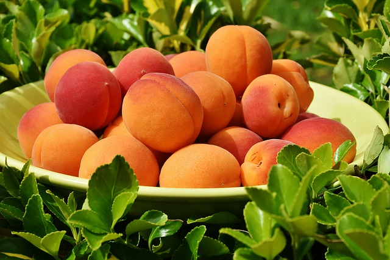
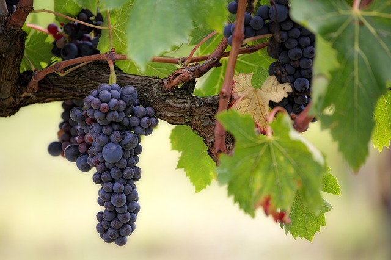

Obtén fácilmente imágenes multispectro de su cultivo para el día más reciente o para un día en el pasado; Tenemos las imágenes más útiles para la agricultura, como NDVI, EVI, True Color y False Color. También puede obtener datos meteorológicos para el cultivo, como el clima actual y el pronóstico. También tenemos datos específicos como la temperatura y las precipitaciones acumuladas, y la temperatura y humedad del suelo. Imágenes satelitales para los cultivos. Datos: NDVI, EVI, VERDADERO y FALSO colores NDVI (Índice de vegetación de diferencia normalizada), EVI (Índice de vegetación mejorado) son los indicadores más comunes para evaluar el progreso de la vegetación a lo largo del tiempo Los colores VERDADERO y FALSO utilizados para visualizar la cubierta vegetal y diferenciarla de la tierra urbana o cualquier otra tierra no utilizada con fines agrícolas, también es útil para distinguir entre diferentes tipos de vegetación
Datos: Clima actual, previsión, historia de su cultivo.
Clima actual
Pronóstico para 5 días con un paso de 3 horas.
Clima histórico
Los conjuntos de datos incluyen la temperatura del aire, la humedad, la velocidad del viento y otros parámetros climáticos significativos.

Datos: temperatura y precipitación acumulada, temperatura del suelo y humedad de su cultivo.
La temperatura acumulada y la precipitación son esenciales para tomar una decisión correcta, dependiendo de la configuración del umbral. Índice de cantidad de temperatura calculado como la suma de las temperaturas diarias. Índice de cantidad de humedad expresado como la suma de la precipitación diaria.
La temperatura del suelo y la humedad son índices esenciales que permiten a su cliente ajustar el trabajo de riego y evitar daños en las raíces de los cultivos.
